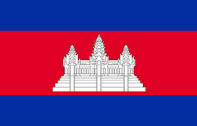

History of Cambodia
Ancient Cambodia (Funan and Chenla Periods)
Funan Kingdom (1st-6th centuries AD): One of the earliest known civilizations in Southeast Asia, Funan was a powerful trading empire. It was influenced by Indian culture, adopting Hinduism and later Buddhism.
Chenla Kingdom (6th-9th centuries AD): Chenla succeeded Funan and became a powerful kingdom in its own right. It eventually split into two regions, Land Chenla and Water Chenla.
The Angkor Empire (9th-15th centuries)
Founding of Angkor (802 AD): The Khmer Empire, known as the Angkor Empire, was established by King Jayavarman II, who declared himself "universal monarch" (Devaraja). The empire grew to dominate much of Southeast Asia.
Angkor Wat (12th century): King Suryavarman II built Angkor Wat, the largest religious monument in the world, originally dedicated to the Hindu god Vishnu.
Buddhism: In the late 12th century, under King Jayavarman VII, Mahayana Buddhism became the state religion, influencing much of Angkor's architecture and art.
Decline: The empire began to decline in the 13th century due to internal strife, invasions by neighboring kingdoms, and environmental changes. By the 15th century, Angkor was abandoned after a Thai invasion.
Post-Angkor Period (15th-19th centuries)
Migration to Phnom Penh: After the fall of Angkor, the capital moved several times before settling in Phnom Penh in the 15th century.
Vassalage: Cambodia became a vassal state of neighboring Siam (Thailand) and later Vietnam, struggling to maintain independence during this period.
French Colonial Period (1863-1953)
Protectorate: In 1863, King Norodom signed a treaty with France, making Cambodia a French protectorate to avoid being swallowed by Siam or Vietnam.
Modernization: The French introduced modern infrastructure, education, and legal systems, but also exploited Cambodia's resources.
Independence: Under King Norodom Sihanouk, Cambodia gained independence from France on November 9, 1953.
Khmer Rouge Era (1975-1979)
Pol Pot’s Regime: The Khmer Rouge, led by Pol Pot, seized Phnom Penh in 1975. They established a brutal regime that aimed to create an agrarian socialist society, leading to the deaths of an estimated 1.7 to 2 million people through starvation, forced labor, and executions.
Fall of Khmer Rouge: In 1979, Vietnam invaded Cambodia, toppling the Khmer Rouge and establishing the People’s Republic of Kampuchea.
Post-Khmer Rouge and Modern Cambodia (1979-Present)
Vietnamese Occupation: Cambodia was under Vietnamese control until the 1989 withdrawal, during which the Khmer Rouge continued guerrilla warfare.
Paris Peace Accords (1991): A peace agreement was signed, leading to United Nations intervention and the first democratic elections in 1993.
Constitutional Monarchy: Cambodia was re-established as a constitutional monarchy under King Norodom Sihanouk. Hun Sen, who had been a prominent figure in the government since the 1980s, became Prime Minister.
Modern Era: Cambodia has seen economic growth and development, but challenges remain, including political repression, corruption, and human rights issues.